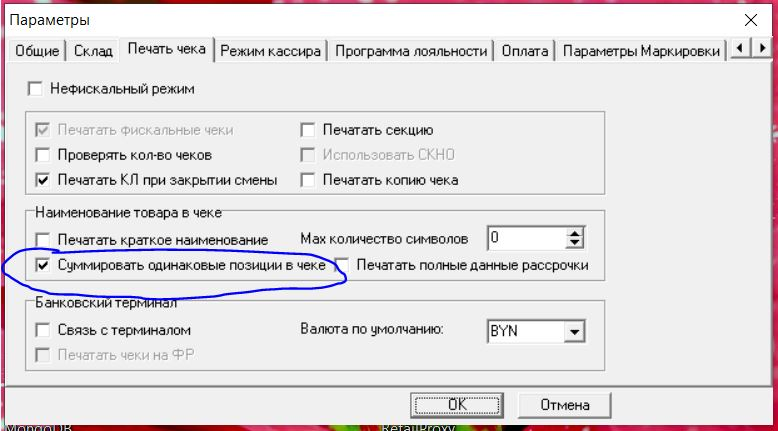

Если компьютер имеет доступ к сети интернет и установлен на компьютере git Bush, то комплекс может быть скачен из gitHub с последующей установкой пакетов библиотек
Если компьютер не подключен к сети интернет, тогда комплекс HTMLScreen_Cash.rar распаковывается из архива с пакетами бибилиотек.
Место куда распаковали комплекс, можно переносить в любую папку, главное потом в настройках Гедымин указать эту папку.
Устанавливаем на кассу ПИ GS.PositiveCash.06Настройки_HTMLScreen📌
После установки ПИ в Гедымин в дереве Исследоваителя выбираем 04. Установить Монитор покупателя через WEB📌
Открывается окно настройки.
Настройка производится впервый раз, а также каждый раз, когда вы захотите изменить параметры такие как:
Порт, на котором будет работать программа
Интервал обновления данных, между Гедымин и монитором
Фон монитора покупателя
Настройка видимости колонок, которые будут отображаться на экране монитора
При начальной установке, если есть подключение к Интернет и установлен git Bush, то комплекс можно загрузить из Git,
установив флажок в позиции Загрузить модуль HTMLScreen из GitHub
при этом, если не будет указана папка в которую установить из GitHub комплекс,
то комплекс будет установлен по умолчанию в папке, где находится программа Гедымин.
Если устанавливаете комплекс из архива, тогда необходимо указать путь к папке куда вы распокавали комплекс.📌
Можно установить фон окна монитора, который будет отображаться, выбрав нужный файл (jpeg, jpg, bmp и т.д.)
Настройка видимости отображения колонок позволяет выбрать колонки, которые будут отображаться на мониторе покупателя.📌
При установке в Гедымине в Параметрах Настройки будет установлен флажок "Суммировать одинаковые позиции в чеке"
Он должен быть установлен, т.к. монитор покупателя не будет отслеживать одинаковые позиции в чеке.

Запускаем АРМ кассира первый раз, затем закрываем окно кассира и второй раз запускаем АРМ кассира.
После второго запуска АРМ кассира стартует Browser.
В окне настройки нужно выбрать браузер, который будет использоваться в качестве монитора покупателяю.
При выборе товара/изменнии количества на мониторе будет отображаться данные чека. 📌
Можно добавить для отображения в чеке покупателя изображения товара
Для этого необохдимо зайти в прайс, выбрать товар, войти в окно редактирования Номенклатуры ТМЦ и на закладке Изображение товара выбрать изображение товара (картинку).📌